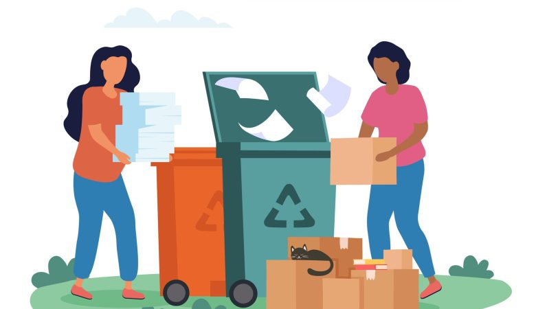

Iniciativas globais
O problema crescente do e-lixo é uma preocupação global que demanda cooperação e ação internacionais. Em resposta a isso, várias iniciativas globais foram lançadas para abordar e mitigar os impactos negativos do descarte inadequado de resíduos eletrônicos.

Quais são as iniciativas e como são feitas:
- Convenção de Basileia: Esta é uma das principais convenções internacionais que regula a movimentação transfronteiriça de resíduos perigosos, incluindo e-lixo. Seu objetivo é prevenir a transferência de resíduos perigosos de países desenvolvidos para países em desenvolvimento. A Convenção de Basileia foi emendada para incluir a proibição de exportar resíduos perigosos para reciclagem ou disposição final em países não membros da OCDE.
- Parceria Solving the E-waste Problem (StEP): Iniciada pela ONU, a StEP é uma iniciativa que reúne organizações intergovernamentais, governos, ONGs, ciência e indústria para desenvolver soluções para problemas associados ao e-lixo. StEP trabalha na promoção de pesquisa, políticas e padrões de práticas responsáveis, com foco na redução dos impactos ambientais e de saúde do e-lixo.
- Global E-Waste Statistics Partnership (GESP): Lançada pela União Internacional de Telecomunicações (UIT), a Universidade das Nações Unidas (UNU) e a Associação Internacional de Resíduos Sólidos (ISWA), a GESP visa melhorar a precisão das estatísticas globais de e-lixo e aumentar a conscientização pública e política sobre o crescente problema do e-lixo.
- Dia Internacional do Lixo Eletrônico: Para aumentar a conscientização sobre o e-lixo, o "Dia Internacional do Lixo Eletrônico" é celebrado em 14 de outubro. Esta data visa educar o público sobre a importância da reciclagem de resíduos eletrônicos e promover ações globais para enfrentar o problema.
Essas iniciativas representam um esforço colaborativo para abordar o desafio do e-lixo de uma maneira que não apenas proteja o meio ambiente, mas também promova práticas de reciclagem e reutilização responsáveis em todo o mundo. A cooperação internacional é essencial, dado que o e-lixo é uma questão que transcende as fronteiras nacionais e requer uma abordagem unificada para sua gestão eficaz.